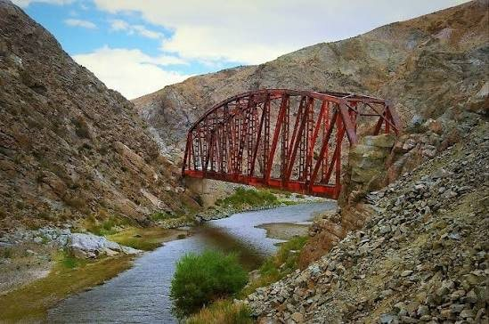
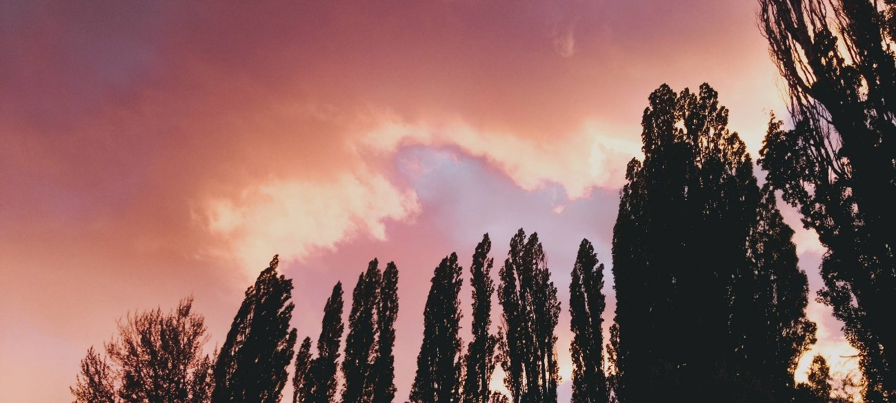
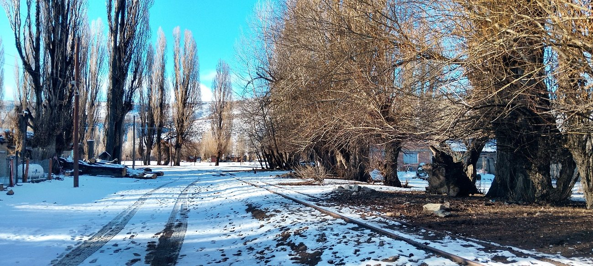
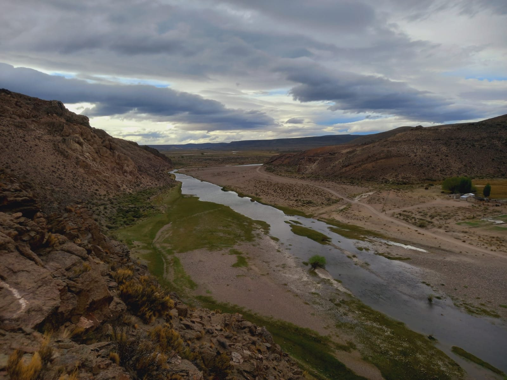
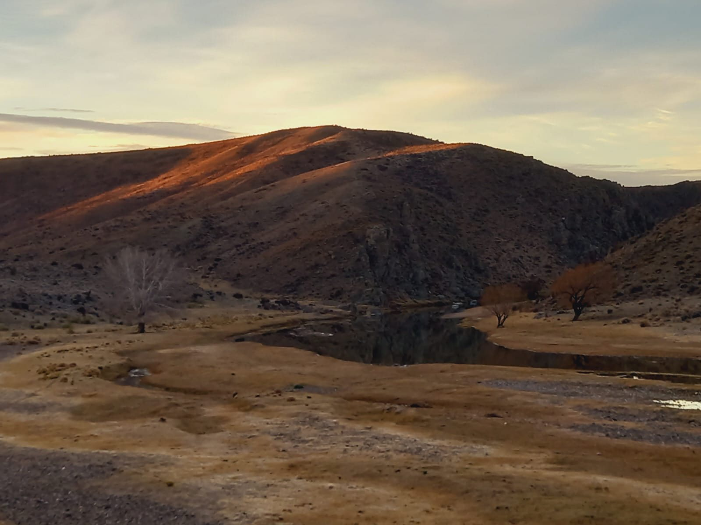

Fue entonces momento de planificar el trayecto que la Selección Argentina recorrería por el país. Así surgió la idea de pensar el mundial como un viaje: cada estadio, cada ciudad, cada atractivo es una parada de un recorrido que une el deporte con la geografía y el turismo de nuestro territorio.

En el taller nos propusimos armar un itinerario propio, eligiendo los puntos que consideramos imperdibles. El resultado es una guía pensada desde la mirada de los estudiantes: qué ver, dónde quedarse y qué hace especial a cada lugar.

Una agenda para descubrir
Cada parada incluye un dato curioso, una recomendación y una foto. Así, la revista se transforma en una herramienta para conocer el país a través del mundial, uniendo propuestas turísticas, cultura y deporte.



